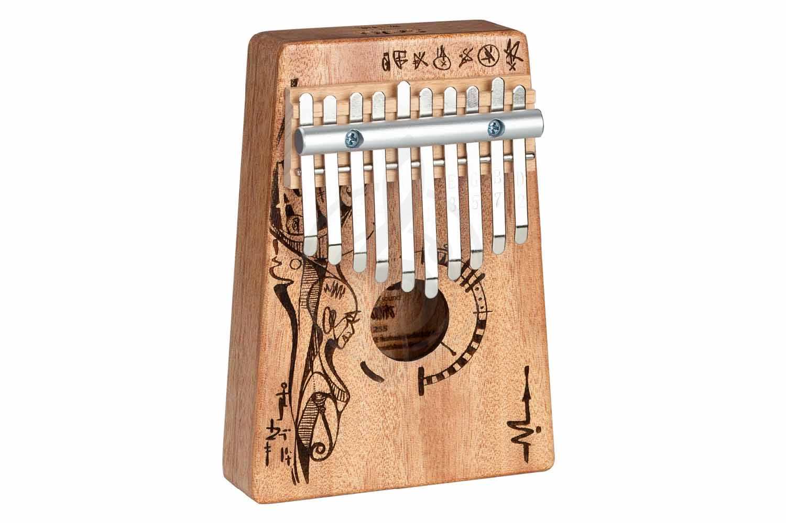

Происхождение акустического явления
Переход инертной материи к колебательному диалогу — момент рождения первой волны во Вселенной.

Глюкофон в звукотерапии
Вибрационная физиология
Влияние акустических колебаний на функционирование органов и тканей через механотрансдукцию.
Телесная иммерсия
Погружение в низкочастотные дроны как переход от когнитивного анализа к до-рефлексивному восприятию.
Порог слышимости
Граница между субсенсорной вибрацией и осознанным звуком: нейрофизиологический и феноменологический аспекты.

Диджериду в звукотерапии
Нейроакустическая модуляция
Влияние спектральных и темпоральных параметров звука на активность лимбической системы и вариабельность ритма.
Тактильная медитация
Практики через костную проводимость и субъективно неслышимые частоты (18–25 Гц), минуя слуховую нагрузку.
Зеркала MG
Научный руководитель Лаборатории — Таисия Валентиновна Кузнецова, кандидат медицинских наук.
Вибрация и материя
Звук как внутреннее свойство вещества: как упругость, плотность и структура среды определяют возможность колебаний.

Ханг в звукотерапии
Терапевтическая тишина
Физиологические эффекты контролируемой акустической изоляции и ультранизкошумовых сред.
Асинхронный ритм
Отказ от директивной синхронизации дыхания в пользу акустических полей с плавающей темпоральной структурой.
Акустогенез
Эволюция звукопорождающих механизмов от первичных механических колебаний в ранних биологических системах.

Колокольчики в звукотерапии
Звуковой энтрейнмент
Синхронизация биологических ритмов (сердечного, дыхательного, нейронного) с внешними акустическими стимулами.
Тишина в звуке
Парадокс глубокой релаксации при погружении в насыщенное, но упорядоченное звуковое поле.
Рождение волны
Момент трансформации локального импульса в устойчивую волновую структуру: физика формирования фронта.

Тингша (Блинчики) в звукотерапии
Резонанс тканей
Селективный отклик биологических структур на частоты, совпадающие с их собственными колебательными модами.
Архитектура внимания
Как спектральные и пространственные характеристики звука формируют качество концентрации; данные ЭЭГ-исследований.
Тишина и колебание
Тишина не как отсутствие звука, а как состояние потенциальной готовности среды к колебанию.

Билы в звукотерапии
Звук и гомеостаз
Роль акустических стимулов в поддержании внутреннего баланса: от регуляции оси гипоталамус-гипофиз до клеточного уровня.
Материнский резонанс
Звуковые практики для матерей новорождённых с минимальной когнитивной нагрузкой, интегрируемые в быт.
Эндогенный звук
Спонтанная генерация акустических колебаний живыми тканями: данные о внутренних «звуковых полях» организма.

Сантура в звукотерапии
Акустическая когерентность
Формирование согласованности между сердечным ритмом, дыханием и мозговой активностью под воздействием звука.
Обертонное звучание
Воздействие полифонического звучания (фундаментальная частота + обертоны) на вестибулярную систему и баланс.
Механотрансдукция
Преобразование механической вибрации в биоэлектрический сигнал на уровне рецепторов.

Посох дождя в звукотерапии
Соматическое слышание
Восприятие звука через тактильные и проприоцептивные каналы — роль кожи, фасций и вестибулярной системы.
Экологическая медитация
Создание поддерживающих акустических сред, где состояние покоя возникает спонтанно как следствие дизайна.
Пространственный резонанс
Возникновение звука не в источнике, а в диалоге с окружением: как архитектура пространства формирует акустику.

Окарина в звукотерапии
Акустическая нейропластичность
Влияние повторяющихся звуковых паттернов на структурную и функциональную перестройку нейронных сетей.
Вибрационная метта
Интеграция намерения заботы в звуковой дизайн через тёплые тембры, плавные атаки и пространственное размещение.

Бубен в звукотерапии

Джембе в звукотерапии

Поющие чаши в звукотерапии

Гонги в звукотерапии

Звуковой луч в звукотерапии
